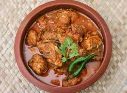
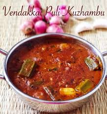

Rinse ½ cup raw rice and ¼ cup moong dal together two times with water.
In a pressure cooker or thick-bottomed pot, add 1 teaspoon ghee and roast the moong dal on low flame until aromatic (do not brown).
Add the washed rice to the dal and roast both for 1 minute.
Pour in 3 and half cups of water and add salt as needed (about half to 1 teaspoon).
Add ½ teaspoon grated ginger and a pinch of asafoetida (hing) to the pot.
pressure cook for 3 - 4 whistles on medium flame (or simmer covered until both rice and dal are soft and mushy).
In a small pan, heat 2 tablespoons ghee, add 1 teaspoon cumin seeds, 1 teaspoon black pepper (crushed or whole), and 10 - 12 cashews.
Once cashews turn golden, add a sprig of curry leaves and saute for a few seconds.
Pour this tempering/tadka over the cooked rice-dal mixture and mix well. If it is too thick, you can add a bit of hot boiling water to get the right soft, runny texture.
Serve hot with coconut chutney and sambar for a classic Tamil breakfast experience.
Wash 1 cup whole wheat (samba wheat) and soak it overnight or for at least 8 hours.
Drain the water and grind the soaked wheat with some water in a blender to a smooth paste.
Strain this mixture through a fine sieve or cloth to extract the wheat milk. Repeat grinding and extracting to get more milk. Set the milk aside for 3-4 hours to settle, then discard the top clear liquid.
Prepare sugar caramel by heating 2.5 cups sugar with ¼ cup water in a pan until it reaches one string consistency (threads form when pulled).
Pour the wheat milk slowly into the hot sugar syrup on low flame. Stir continuously to mix well and cook.
Keep stirring until the mixture thickens; start adding ghee tablespoon by tablespoon while stirring.
Continue stirring and adding ghee gradually. Cook until the halwa absorbs all the ghee and starts releasing oil/ghee at the sides—it becomes glossy and soft but holds together.
Add fried cashew nuts and a pinch of cardamom powder for flavor and mix thoroughly.
Keep stirring on low flame for 15-20 minutes until the halwa changes to a pale color and leaves the sides of the pan.
Serve hot in bowls or spread on a greased plate, let cool, and cut into pieces if desired.
3. Kari Kulambu

Recipe
Dry roast ½ teaspoon cumin seeds, ½ teaspoon whole black pepper, 1 tablespoon coriander seeds, 3 dried red chilies, 1 teaspoon urad dal, and 1 teaspoon chana dal until golden and aromatic.
Add ⅓ cup grated coconut and roast briefly, remove from heat and let cool.
Grind the roasted spices and coconut with little water to make a smooth paste, set aside.
Heat 3 tablespoons gingelly (sesame) oil in a pan. Add ½ teaspoon vadagam (seasoned lentil wafers) and let them crackle.
Add few curry leaves, 6 garlic cloves, 10 small onions (shallots), and 2 dried red chilies, saute till golden brown.
Add 1 medium chopped tomato, saute until mushy and raw smell disappears.
Add 2 drumsticks cut into 3-inch pieces, 3 brinjals (eggplants) cut into wedges, ¼ teaspoon turmeric powder, 1 tablespoon Kashmiri chili powder, and salt.
Saute vegetables briefly, then add about 2 cups water and bring to boil. Cook covered on medium heat for 10-12 minutes or until vegetables soften.
Add the ground coconut-spice paste and ½ cup tamarind extract. Mix well and simmer on low-medium flame for 10 minutes until oil separates and kulambu thickens.
Switch off and serve hot with steamed rice for a traditional Tamil meal.
4. Puli kulambu

Recipe
Soak a lemon-sized ball of tamarind in warm water for 10 minutes, mash, and extract juice. Set aside.
Heat 3 tablespoons gingelly oil in a pan. Add ½ teaspoon mustard seeds, ¼ teaspoon fenugreek seeds, and let them splutter.
Add 10 garlic cloves, 3 small onions (shallots), curry leaves, and saute until golden brown.
Add 2 chopped tomatoes and cook until they turn soft and mushy.
Add 1 teaspoon coriander powder, 1.5 teaspoons red chili powder, ¼ teaspoon turmeric powder, and salt to taste.
Stir the spices well and cook for 1-2 minutes till raw smell disappears.
Pour the tamarind extract along with 1-1.5 cups water (adjust consistency as preferred).
Bring the mix to boil and then add chopped vegetables like drumstick, brinjal, or lady's finger as desired.
Simmer on medium-low flame for 15-20 minutes until the kulambu thickens and vegetables are tender.
Serve hot with steamed rice and a side of appalam or vadagam for authentic Tamil meals.
5. Sambar
Recipe
Rinse ½ cup toor dal (split pigeon peas) well. Pressure cook with 3 cups water, ¼ teaspoon turmeric powder, and a pinch of asafoetida (hing) until soft (3-4 whistles).
Soak a lemon-sized ball of tamarind in warm water for 10 minutes. Extract tamarind juice and set aside.
Chop 2 cups mixed vegetables like drumstick, carrots, beans, potato, cauliflower, and pearl onions.
In a pot, boil the vegetables with 2 cups water until tender (about 8-10 minutes).
Add the cooked dal to the boiled vegetables.
Add 2 tablespoons sambar powder, tamarind juice, salt, and 1 tablespoon jaggery (optional) to the mix. Simmer for 5-7 minutes to blend flavors.
Chop coriander leaves and keep ready for garnish.
For tempering, heat 2 tablespoons oil (preferably sesame or coconut), add ½ teaspoon mustard seeds, ⅓ teaspoon urad dal, 4 dried red chilies, and curry leaves. Fry until aromatic and mustard seeds crackle.
Pour the tempering over the simmering sambar and mix well. Cook for another 3 minutes.
Serve hot with steamed rice, idli, dosa, or medu vada for a wholesome Tamil meal.
6. Vendakai Poriyal
Recipe
Wash 250 grams lady's finger well under running water, then wipe dry completely with a clean cloth.
Slice the vendakai into ½ inch pieces and keep aside.
Heat 2 tablespoons oil (preferably sesame oil) in a pan over medium heat.
Add ½ teaspoon mustard seeds and ½ teaspoon urad dal. Allow the mustard seeds to crackle and the dal to turn golden brown.
Add 8-10 curry leaves, 1-2 chopped green chilies or broken dry red chilies, a pinch of asafoetida, and ⅛ teaspoon turmeric powder. Stir well.
Add the sliced vendakai to the pan and saute for 2-3 minutes on medium heat while stirring continuously to avoid stickiness.
Squeeze in ¾ tablespoon lemon juice to reduce sliminess (optional).
Add salt to taste and continue to stir-fry on low heat without covering the pan. Stir every 3-4 minutes for uniform cooking, for about 12-14 minutes until vendakai is cooked but not mushy.
Switch off flame and sprinkle 2 tablespoons chopped coriander leaves. Optionally, add 2-3 tablespoons grated fresh coconut and mix.
Serve hot or warm as a side dish with rice, sambar, or rasam.
7. Vuluthu Vada
Recipe
Soak 1 cup urad dal in water for 4-5 hours or overnight.
Drain the water and grind the urad dal with very little water to a smooth, fluffy batter. Do not add too much water, batter should be thick and airy.
Chop 1 finely chopped onion, 2 green chilies, a small piece of ginger, coriander leaves, and curry leaves. Add these to the batter along with ½ teaspoon salt and mix well.
Add 1 teaspoon cumin seeds and a pinch of asafoetida (hing) to the batter for flavor.
Heat oil in a deep frying pan or kadai over medium heat for deep frying.
Wet your hands, take a small portion of batter, and flatten it slightly into a donut shape with a hole in the center.
Carefully slip the prepared vada into hot oil. Fry a few at a time without overcrowding.
Fry on medium heat until the vada turns golden brown and crisp on both sides. Flip occasionally for even cooking.
Remove the vadas with a slotted spoon and drain excess oil on kitchen paper towels.
Serve hot with coconut chutney and sambar for a classic Tamil breakfast or snack.
8. Manithakkali Keera Thanni
Recipe
Separate the leaves from the stems of 2 cups black nightshade greens (Manithakkali Keerai) and wash thoroughly to remove all dirt.
Slice 5 small shallots (small onions) and slightly crush 1 teaspoon cumin seeds.
In 2 cups water (or water from rice washing called kazhani thanneer), bring to boil and add the sliced shallots, crushed cumin seeds, a pinch of sugar, and the cleaned greens.
Cook the mixture on medium flame until the greens are soft (around 20-30 minutes) adding salt halfway through cooking.
Meanwhile, grind ½ cup grated fresh coconut with about ¼ cup lukewarm water to extract coconut milk; squeeze well.
Once the greens are cooked, switch off the stove and add the extracted coconut milk.
Stir well, and do not boil the mixture after adding coconut milk; just warm it up gently.
Temper cumin seeds in a teaspoon of hot oil, then add dry red chilies and curry leaves.
Pour this tempering over the cooked keerai thanni and mix well.
Serve hot as a healthy soup or with rice mixed with ghee, perfect for soothing mouth ulcers or digestion.
9. Curd_Rice
Recipe
Rinse 1 cup raw rice well and cook it with 2 cups water in a pressure cooker or pot until very soft and mushy (3-4 whistles).
Once cooked, mash the rice gently with a spoon or whisk to remove lumps. Let it cool to room temperature.
Add 1½ cups fresh thick yogurt (curd) to the cooled rice and mix well.
Heat 2 tablespoons oil or ghee in a pan for tempering.
Add ½ teaspoon mustard seeds and wait for them to splutter.
Add 1 dried red chili broken into pieces, 1-2 green chilies slit, 8-10 curry leaves, and 1 teaspoon urad dal. Saute until urad dal turns golden brown.
Add a pinch of asafoetida (hing) and 1 tablespoon grated ginger; saute for a few seconds.
Pour this tempering over the curd rice and mix gently but thoroughly.
Add finely chopped coriander leaves, grated carrots, and optionally pomegranate seeds or chopped cucumber for freshness and texture.
Serve immediately at room temperature or chilled as a comforting South Indian meal accompaniment.
10. Veg Biriyani
Recipe
Rinse 1 cup basmati rice and soak for 30 minutes. Drain after soaking.
Heat 2 tablespoons oil or ghee in a deep pan. Add 1 bay leaf, 1-inch cinnamon stick, 3 cloves, 2 cardamom pods, and fry for a minute until aromatic.
Add 1 sliced onion and saute until golden brown.
Add 1 tablespoon ginger-garlic paste, chopped green chilies (2), and saute until raw smell disappears.
Add mixed vegetables (1 cup carrots, beans, peas, potatoes, cauliflower) and cook for 5 minutes.
Add 1 teaspoon biriyani masala, ½ teaspoon turmeric powder, 2 chopped tomatoes, and salt to taste. Cook until tomatoes are mushy.
Add 1½ cups drained rice, 2 cups water, and chopped coriander and mint leaves (2 tablespoons each). Mix gently.
Cover and cook on low heat for 15-20 minutes or until rice and vegetables are cooked and water absorbed. Allow resting for 10 minutes after turning off.
Garnish with fried onions, chopped coriander, and a drizzle of ghee.
Serve hot with raita or salan for a classic Tamil-style Veg Biriyani meal.